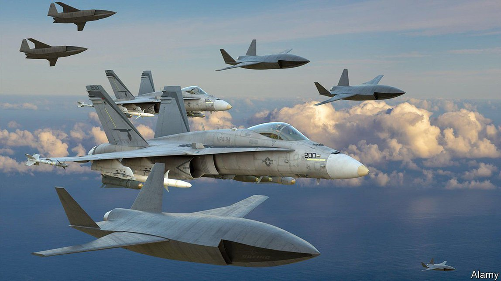
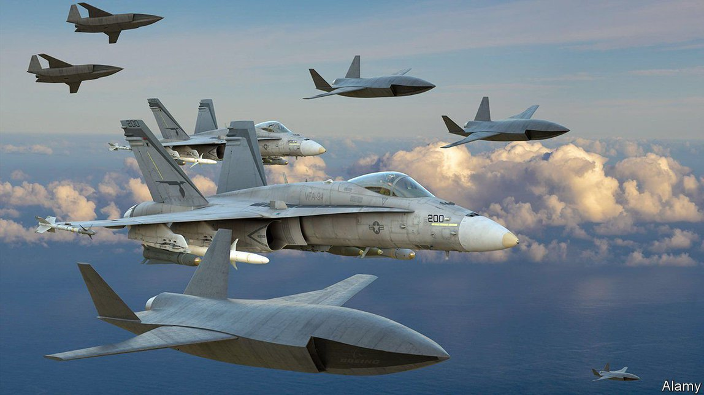

Text
2021-07-09T16:29:59+00:00
The future of war
未来战争
未來戰爭
A thought-provoking reflection on how AI will change conflict
对人工智能会如何改变战事的深思
對人工智能會如何改變戰事的深思
Algorithms may make proficient soldiers but poor generals
算法也许能打造精兵，但难以成就强将【《我，战争机器人》书评】
算法也許能打造精兵，但難以成就強將【《我，戰爭機器人》書評】
 
I, Warbot. By Kenneth Payne. Oxford University Press; 336 pages; $29.95. Hurst; £20
《我，战争机器人》，肯尼斯·佩恩著。牛津大学出版社，336页，29.95美元。赫斯特出版社，20英镑
《我，戰爭機器人》，肯尼斯·佩恩著。牛津大學出版社，336頁，29.95美元。赫斯特出版社，20英鎊
THE UN’S Panel of Experts on Libya rarely grabs the headlines. But its valedictory report in March caused a furore. It noted that in a battle around Tripoli last year, Libya’s government had “hunted down and remotely engaged” the enemy with drones—and not just any drones. The Kargu-2 was programmed to attack “without requiring data connectivity between the operator and the munition”. The implication was that it could pick its own targets.
联合国的利比亚问题专家小组很少登上头条。但今年3月，该小组的一份总结报告激起了波澜。报告指出，去年在的黎波里周边的一场战役中，利比亚政府运用无人机“追击并远程攻击”敌军。这种名为Kargu-2的无人机非同一般，它被设定为“无需在操作员和本机之间做数据连接”就能发动攻击，也就是说，它能自主选择攻击目标。
聯合國的利比亞問題專家小組很少登上頭條。但今年3月，該小組的一份總結報告激起了波瀾。報告指出，去年在的黎波里周邊的一場戰役中，利比亞政府運用無人機“追擊並遠程攻擊”敵軍。這種名為Kargu-2的無人機非同一般，它被設定為“無需在操作員和本機之間做數據連接”就能發動攻擊，也就是說，它能自主選擇攻擊目標。
Was this a true autonomous weapon, or just a clever missile? In June the Turkish manufacturer insisted that, contrary to its own marketing, for now the drone required a human to push the button. This sort of technology is at the heart of “I, Warbot” by Kenneth Payne, a thought-provoking reflection on how artificial intelligence (AI) will change conflict.
这究竟是一款名副其实的自主武器，还是只是一种智能导弹？6月，其土耳其制造商坚称，就目前而言，这款无人机在发起攻击时仍需要人类按下操作按钮。这和它在营销时的说法自相矛盾。这类技术正是肯尼斯·佩恩（Kenneth Payne）的新著《我，战争机器人》（I, Warbot）讨论的核心，书中对人工智能（AI）将如何改变军事冲突的思考发人深省。
這究竟是一款名副其實的自主武器，還是只是一種智能導彈？6月，其土耳其製造商堅稱，就目前而言，這款無人機在發起攻擊時仍需要人類按下操作按鈕。這和它在營銷時的說法自相矛盾。這類技術正是肯尼斯·佩恩（Kenneth Payne）的新著《我，戰爭機器人》（I, Warbot）討論的核心，書中對人工智能（AI）將如何改變軍事衝突的思考發人深省。
In some ways, the story is familiar. It involves the entwined histories of computing and warfare; the recent evolution of new, powerful forms of AI modelled on the neurons of the brain rather than the logic of the mind; and the ensuing possibilities for weapons to see what is around them—and strike with superhuman speed and precision. Mr Payne, an academic at King’s College London, is especially bullish on the potential of swarms, “a menagerie of specialist robots” that can concentrate to attack and melt away just as quickly.
在某些方面，这些内容并不稀奇。它涉及计算与战争交织的历史、模拟大脑神经元而非思维逻辑的强大新型AI的进展，以及武器因而可能“看见”周围环境——并以人类无法企及的速度与精度发起攻击。佩恩是伦敦国王学院的一名学者，他特别看好“无人机群”的潜力，即可以快速聚集攻击而后又快速分散的“专用机器人集群”。
在某些方面，這些內容並不稀奇。它涉及計算與戰爭交織的歷史、模擬大腦神經元而非思維邏輯的強大新型AI的進展，以及武器因而可能“看見”周圍環境——並以人類無法企及的速度與精度發起攻擊。佩恩是倫敦國王學院的一名學者，他特別看好“無人機群”的潛力，即可以快速聚集攻擊而後又快速分散的“專用機器人集群”。
“The tactical implications are profound,” he predicts. The offence will dominate. Defenders will have to rely on deception, generating clouds of decoy targets, rather than on protections like armour and fortification. Martial virtues such as courage and leadership will give way to technical competence. Dividing armed forces into services optimised for land, air and sea may look increasingly strange in a world of machines that can range across them.
“这对战术有深远的影响。”他预测。进攻方将占尽上风。防御方只得依赖障眼法，制造大量诱饵目标，而不再是依赖装甲和防御工事。勇气和指挥等军事素养将让位给技术能力。机器将会跨越海陆空的界限，使得把军队划分为三个军种显得日益不合时宜。
“這對戰術有深遠的影響。”他預測。進攻方將佔盡上風。防禦方只得依賴障眼法，製造大量誘餌目標，而不再是依賴裝甲和防禦工事。勇氣和指揮等軍事素養將讓位給技術能力。機器將會跨越海陸空的界限，使得把軍隊劃分為三個軍種顯得日益不合時宜。
Above all, though, “I, Warbot” is a reminder that war is about more than tactics. It is about choosing which battles to fight, how to knit them into a successful campaign and how to connect military victories to political aims—in short, war is about strategy. And soldiery and strategy are fundamentally different. Computer programs can already defeat human pilots in simulated dogfights. But could they come up with the bold, swift and visionary attacks that let Napoleon Bonaparte knock out one European army after another?
然而最重要的是，《我，战争机器人》提醒人们，战争不仅仅在于战术。它关乎选择去打哪些仗，如何部署它们来赢得一整个战役，以及如何把军事胜利与政治目标连接起来——简言之，战争关乎战略。而战斗能力和战略部署根本是两回事。在模拟空战中，计算机程序已经可以击败人类飞行员。但它们能想出拿破仑一世一一击溃欧洲各国军队时采用的那些大胆、迅捷、富有远见的战法吗？
然而最重要的是，《我，戰爭機器人》提醒人們，戰爭不僅僅在於戰術。它關乎選擇去打哪些仗，如何部署它們來贏得一整個戰役，以及如何把軍事勝利與政治目標連接起來——簡言之，戰爭關乎戰略。而戰鬥能力和戰略部署根本是兩回事。在模擬空戰中，計算機程序已經可以擊敗人類飛行員。但它們能想出拿破崙一世一一擊潰歐洲各國軍隊時採用的那些大膽、迅捷、富有遠見的戰法嗎？
Algorithms can certainly outwit opponents in games that blend skill, chance and psychology. In 2017 Libratus, a computer program, saw off four poker stars. AI can also innovate: in 2016 AlphaGo, another program, thrashed a world champion of Go, an ancient Chinese board-game, with moves that dazzled onlookers.
在结合技巧、概率和心理战的游戏中，算法确实有可能战胜对手。2017年，名为冷扑大师（Libratus）的计算机程序就击败了四位顶尖扑克选手。AI也能创新：2016年，另一个名为阿尔法狗（AlphaGo）的程序走出令人诧异的棋着，最终击败了围棋世界冠军。
在結合技巧、概率和心理戰的遊戲中，算法確實有可能戰勝對手。2017年，名為冷撲大師（Libratus）的計算機程序就擊敗了四位頂尖撲克選手。AI也能創新：2016年，另一個名為阿爾法狗（AlphaGo）的程序走出令人詫異的棋着，最終擊敗了圍棋世界冠軍。
But, argues Mr Payne, this is a simulacrum of genius, not the real thing. These gizmos exhibit “exploratory creativity”—essentially a brute-force calculation of probabilities. That is fundamentally different from “transformational creativity”, which entails the ability to consider a problem in a wholly new way, and requires playfulness, imagination and a sense of meaning. All that may depend on emotion, and thus on parts of human biology alien to computers. “AI is a statistical processor par excellence”; but in essence it remains “a wonderfully sophisticated abacus”.
但佩恩认为，这只是对人类才智的模拟，而非才智本身。这些程序展现的“探索性创造力”实质上是对概率的蛮力运算。这与“变革性创造力”有质的区别，后者需要以全新方式看待问题的能力，也需要一种随性顽皮、想象力和意义感。这一切可能都依赖于情感，也就是计算机所缺失的那部分人类生物特质。“AI是卓越的统计学处理器”，但本质上仍不过是“一个非常精密的算盘”。
但佩恩認為，這只是對人類才智的模擬，而非才智本身。這些程序展現的“探索性創造力”實質上是對概率的蠻力運算。這與“變革性創造力”有質的區別，後者需要以全新方式看待問題的能力，也需要一種隨性頑皮、想象力和意義感。這一切可能都依賴於情感，也就是計算機所缺失的那部分人類生物特質。“AI是卓越的統計學處理器”，但本質上仍不過是“一個非常精密的算盤”。
A proficient soldier, the warbot may thus be a limited general. The problem is that the line between tactics and strategy can blur. Battlefield decisions can have geopolitical ramifications. Consider the case of B-59, a Soviet submarine pounded by American depth-charges during the Cuban missile crisis of 1962. The frazzled captain ordered the use of a nuclear-tipped torpedo. Conscious of the stakes, Vasily Arkhipov, the second-in-command, refused to authorise the launch.
所以，战争机器人可以是精兵，但可能做不了强将。问题在于战术和战略之间的界限会模糊。战场上的决策可能产生地缘政治后果。想想1962年古巴导弹危机期间遭美国深水炸弹围截的苏联潜艇B-59。当时烦躁不堪的艇长下令发射装有核弹头的鱼雷，但副艇长瓦西里·阿尔希波夫（Vasily Arkhipov）意识到其中的利害关系，拒绝批准发射鱼雷。
所以，戰爭機器人可以是精兵，但可能做不了強將。問題在於戰術和戰略之間的界限會模糊。戰場上的決策可能產生地緣政治後果。想想1962年古巴導彈危機期間遭美國深水炸彈圍截的蘇聯潛艇B-59。當時煩躁不堪的艇長下令發射裝有核彈頭的魚雷，但副艇長瓦西里·阿爾希波夫（Vasily Arkhipov）意識到其中的利害關係，拒絕批准發射魚雷。
Would a computer have done so? “A warbot is likely to be more accurate, proportionate and discriminate” than humans, says Mr Payne. The risk is that “a machine is undeterred by the sobering fear of things getting out of hand.” ■
换了是计算机，它会这样做吗？相比人类，“战争机器人可能更精准、更均衡、辨别力更强”，佩恩指出。但危险之处是“机器不会因为对局面可能失控生发出令人清醒的恐惧而却步”。
換了是計算機，它會這樣做嗎？相比人類，“戰爭機器人可能更精準、更均衡、辨別力更強”，佩恩指出。但危險之處是“機器不會因為對局面可能失控生髮出令人清醒的恐懼而卻步”。